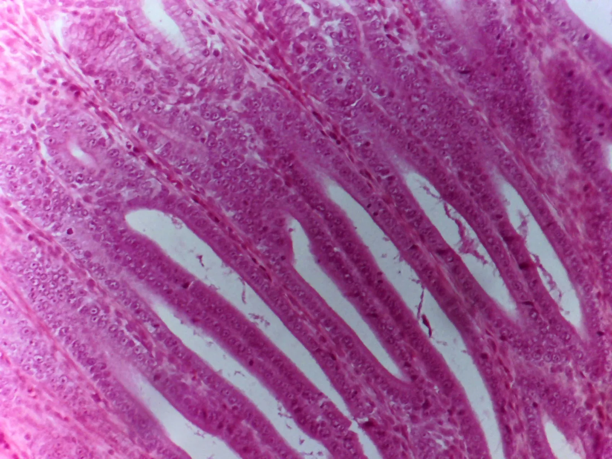
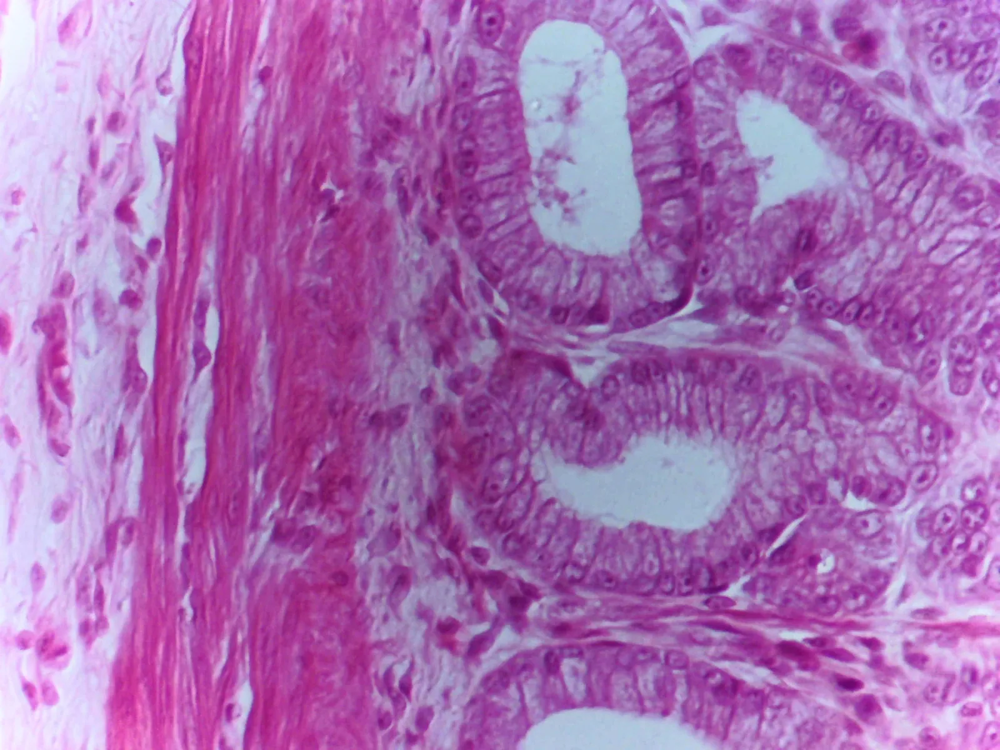

Lâmina 44 · Sistema digestório
Junção esôfago-estômago



Toque na imagem para ampliar. No computador, use as setas do teclado para trocar de imagem.
Lâmina 44 · Sistema digestório


Toque na imagem para ampliar. No computador, use as setas do teclado para trocar de imagem.